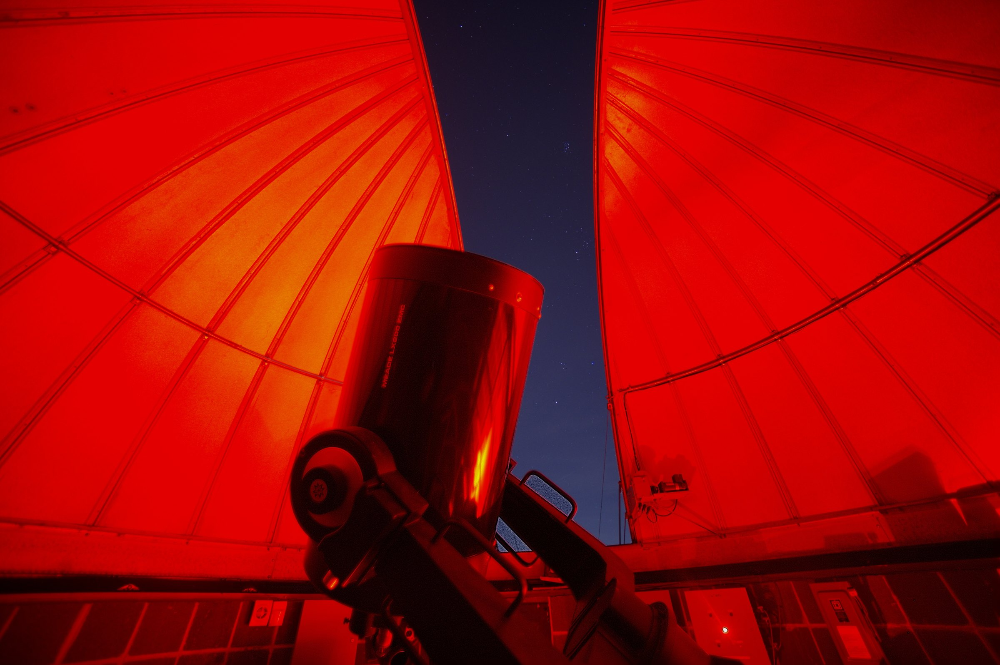
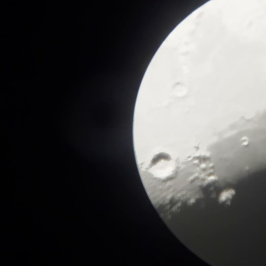
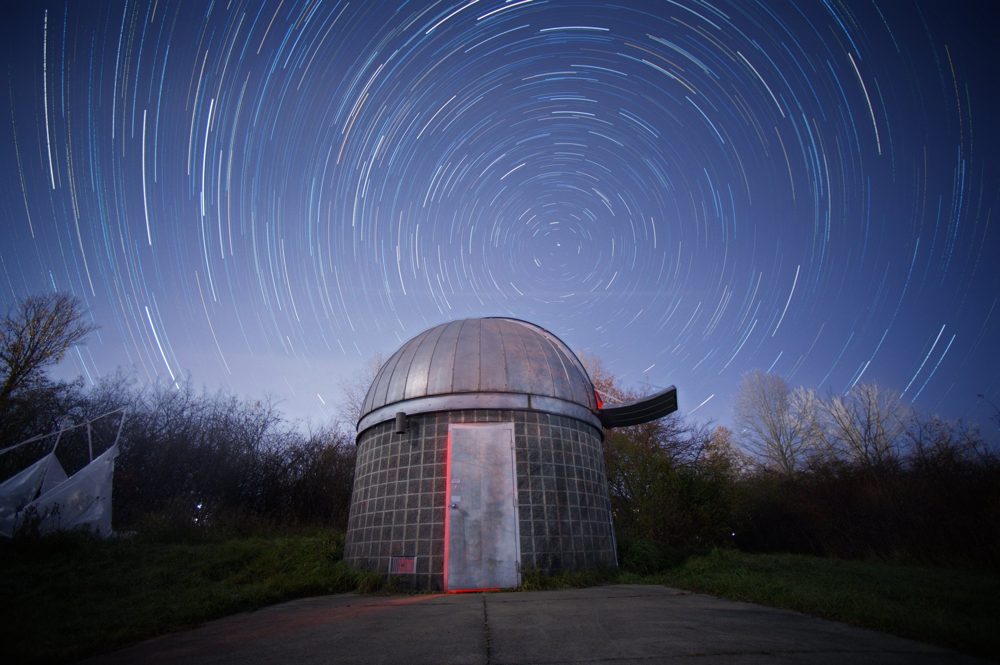

You Probably Won’t Get It Until You See It
At 9:51 on a Wednesday night in November I was standing in the Kent State observatory with my phone in one hand and a telescope keypad in the other, asking an AI why the telescope wouldn’t move south. The Meade LX200 would slew a little and then stop, dead and silent, as if it had decided on its own that south was off limits. Derek and TJ were with me. Derek and I joined Kent State’s astronomy club together, and he’s been out to the observatory a few times to learn the ropes, but none of us had driven this scope on our own. The keypad’s menus scrolled past in a loop that never seemed to land on the setting we wanted: local time, timer, telescope, object library, back to local time. The best guess we got was that the mount had been set up on a wedge for polar tracking while the handset still believed it was sitting flat, so it kept calculating that we were about to point the tube into the floor. We never found the setting it wanted. In the end we got the Moon the old way, lining the scope up on it by eye and fine-tuning it by hand.
I’m telling you this part first because the four essays before this one were about photographs that arrived finished. Earthrise came back from Apollo 8 as a frame someone could print, crop, argue over and put on a stamp. The Pale Blue Dot came back as a few pixels from billions of miles out. Nobody saw the fumbling that came before either of those pictures existed. This night was mostly fumbling, and I think that matters to what happened next.
“It’s a ball”
The Moon that night was a little past first quarter, about two thirds lit, sinking toward the southwest. Once we had it in the eyepiece, TJ leaned in and the first things he said were short and a little broken: “Those are craters. I can’t. It’s a ball.” Then, “That is insane. Oh my God.”
TJ has seen the Moon every night of his life that the sky allowed. He said as much a minute later, trying to explain the difference to himself: “I do see it every day. But you’ve never seen it.” I keep coming back to that sentence, because it describes the thing this series has been circling for four essays. Most of us know the Moon the way we know a famous face. We have seen it so many times, in so many photographs, that we stopped looking at it somewhere along the way.
I said something close to that on the recording, without meaning to make a point. It wasn’t until I started photographing full moons rising and setting, I told the room, that I realized there is a good Moon to catch almost every night if you know when and where to look, and that we mostly don’t. “We take it for granted.”
A lens with no sensor

The photographer in me had a more embarrassing question, and the recording has that too. I wanted to know what millimeter we were looking through, and whether the different eyepieces were magnifying anything at all or just cropping a smaller piece of the same picture, the way a smaller sensor would. TJ said it reminded him of the mirror lens I own, and he was more right than either of us knew in the moment. The LX200 bounces light off a big mirror at the back of the tube, up to a small mirror at the front, and back down through a hole in the middle of the big one, which is the same folded trick a mirror lens uses to fit a long focal length into a short barrel. The eyepiece is the last piece of glass before your eye. Swap it and you change how hard the image is magnified. Focusing works differently too: you turn a knob that slides the main mirror itself, which is why the first rule Derek laid down for the rest of us inside the dome was about that knob. “Don’t touch this. That changes the mirrors in here, and we don’t want to do that.”
What the telescope doesn’t have is a sensor. I asked whether the computer on the mount could capture anything, and Derek’s answer came back flat: it can’t, “it’s just for controlling.” Every image the telescope made that night formed for a moment at the eyepiece and went straight into whoever was bent over it. There was no file and no frame. The only records are the ones in the reel, phone cameras pressed against the glass, a bright disc swimming in black, half the time out of focus. Derek, trying to shoot it, said what every photographer in the room was thinking: “I have no idea how to expose this.” By any standard I’d apply at work, the best photograph of the night was a bad one.
Within minutes, three of us were buying adapters online. There’s a stretch of the audio where we’re all on our phones ordering T-rings to bolt real cameras to the back of this thing, while TJ prices out a telescope of his own. He didn’t buy one that night, but he hasn’t stopped looking.
What the photographs were standing in for
Here is the part I didn’t expect to write. This series has been about photographs that changed what people believed about space and about themselves, and I’ve treated the photograph as the thing doing the changing. The night at the observatory made me think the photograph is often a stand-in. Earthrise and the Pale Blue Dot worked because almost none of us will ever go where those cameras went, so the picture travels for us. TJ put his finger on that too, right after “something I could almost, like, touch is insane”: “The fact you’ve been to it is the craziest part to me.” He meant the astronauts, and I think he was right to be more amazed by them than by any picture they brought home. The photographs were how the rest of us got a share of that trip, secondhand.
An eyepiece closes some of that distance in a way a print can’t. The light going into TJ’s eye had left the Moon a little over a second earlier. The view moved. Air shimmered across it. If you nudged the focus, it went soft and came back. None of that survives in a photograph, and I’d always filed it under imperfection. Watching someone meet the Moon that way for the first time, it looked more like the point.

Turn it slowly. The view goes soft, then sharp, then soft again.
“Not to rain on your guys’ parade, but I don’t get what fascinates you guys so much about this.”
TJ had come along without really getting what Derek and I see in nights like this, and a few minutes in he said so out loud: “Not to rain on your guys’ parade, but I don’t get what fascinates you guys so much about this. I have never looked at a telescope and seen anything.” Then, in the same breath: “But seeing that, I get it.”
Derek answered him like someone who’d already been through it. The first time he came out here, he said, he was mind blown, and he still couldn’t do much better than TJ at describing it: “You can’t explain it to someone.” Then he said the thing I’d have cut from any polished version of this story because it sounds too much like a tagline: “I think every moment I’ve been here, I’ve just been grinning.”
I’ve spent four essays trying to explain how a single image can make people get it. That night nobody made an image worth framing, which was never really the point, and TJ got it anyway.

The reel
The video that goes with this essay has more people in it than Moon: the dome opening, the stars turning overhead in a timelapse from the camera I left outside, and faces lit red at the eyepiece. Near the end, Derek says, “That’s one of the coolest things I’ve ever seen in my entire life,” while we’re looking at the edge of the Moon falling off into black.
There’s no iconic photograph from that night, and I’ve stopped wishing there were one. The phone shots are soft and the Moon wobbles in them, and every time I scrub through the footage I still hear TJ say “It’s a ball” like he’s just been let in on something. If you’ve only ever known the Moon from photographs, mine included, find a telescope. You probably won’t get it until you see it for yourself.
I made this with organizational support from Claude, which helped sort the footage, transcripts and notes from the night. The words and the judgment calls are mine, and I checked every quote against the recordings.